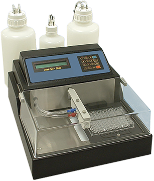

STAT FAX 2600
Lavador de microplacas

DESCRIPCIÓN:
Lavador de microplacas.
CARACTERÍSTICAS:
• Lava placas y tiras de fondo plano, redondo o en “V”.
• Software flexible. Memoria que puede almacenar hasta 50 protocolos de lavado ingresados por el usuario; seis modos de lavado/enjuagado programados de fábrica.
• Ciclo de enjuagado automático: programable.
• Operación precisa con monitoreo constante de aspiración y presión.
• Listo para usar; incluye 3 botellas, protección contra aerosoles y cabezal de 8 canales.
• Volumen residual: < 3 ul.
• Precisión de dispensado: < 3% CV a 300 ul. Tiempo de procesamiento (placa completa): 55 segundos.
• Aspirado/dispensado con aspiración simple o doble.
• Pantalla: LCD de dos líneas alfanuméricas, 24 caracteres por línea.
• Teclado: teclado de membrana de 16 teclas, 4 x 4.
• Requisitos de energía: 115 V o 230 V CA, 50-60 Hz (interruptor seleccionable).
• Microprocesador: Z80A o Z180.
• Memoria: la memoria RAM es soportada por la batería, almacena 50 protocolos de lavado aprox.
Certificación NRTL y CE.
Registro: 0242E2014 SSA
DATOS COMPLEMENTARIOS: Para información adicional comunicarse a:
WIENER LAB.
REPRESENTACIONES LABIN MÉXICO, S. A. de C.V.
Teléfonos: (55) 5524-0771, 5200-2500
Lada sin costo: 01 800-581-4616
e-mail: contacto@wiener-mex.com
www.wiener-lab.com.ar